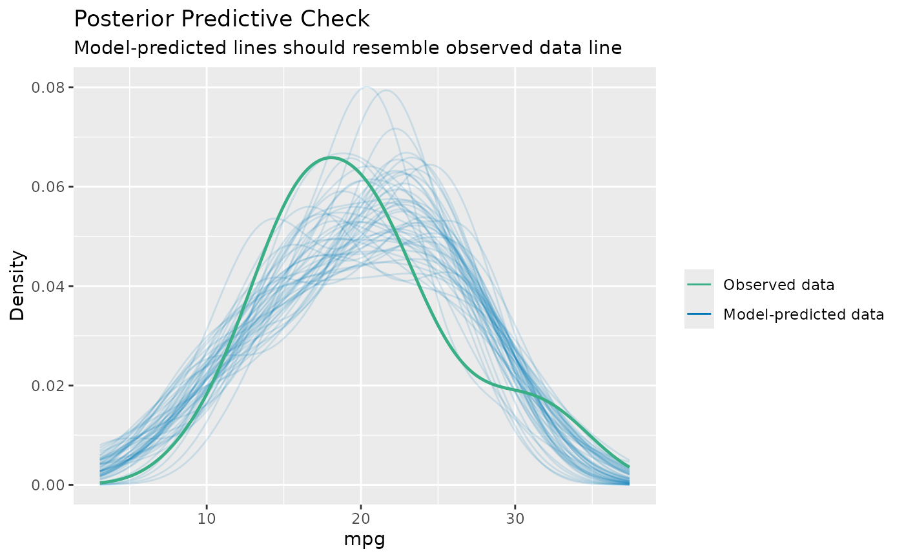
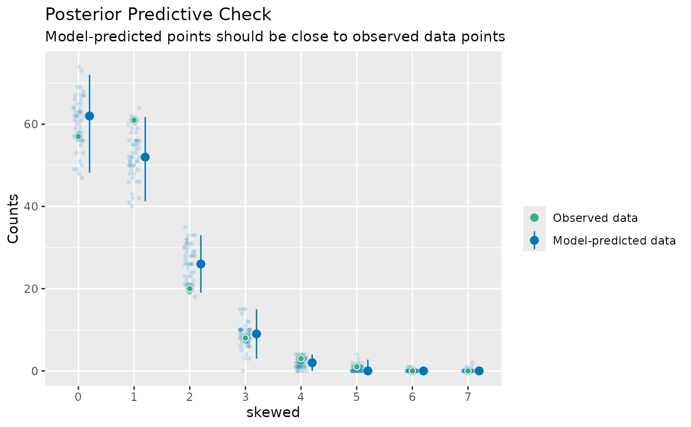

Posterior predictive checks mean "simulating replicated data under the fitted model and then comparing these to the observed data" (Gelman and Hill, 2007, p. 158). Posterior predictive checks can be used to "look for systematic discrepancies between real and simulated data" (Gelman et al. 2014, p. 169).
performance provides posterior predictive check methods for a variety
of frequentist models (e.g., lm, merMod, glmmTMB, ...). For Bayesian
models, the model is passed to bayesplot::pp_check().
Usage
check_predictions(object, ...)
# Default S3 method
check_predictions(
object,
iterations = 50,
check_range = FALSE,
re_formula = NULL,
bandwidth = "nrd",
type = "density",
verbose = TRUE,
...
)
posterior_predictive_check(object, ...)
check_posterior_predictions(object, ...)Arguments
- object
A statistical model.
- ...
Passed down to
simulate().- iterations
The number of draws to simulate/bootstrap.
- check_range
Logical, if
TRUE, includes a plot with the minimum value of the original response against the minimum values of the replicated responses, and the same for the maximum value. This plot helps judging whether the variation in the original data is captured by the model or not (Gelman et al. 2020, pp.163). The minimum and maximum values ofyshould be inside the range of the related minimum and maximum values ofyrep.- re_formula
Formula containing group-level effects (random effects) to be considered in the simulated data. If
NULL(default), condition on all random effects. IfNAor~0, condition on no random effects. Seesimulate()in lme4.- bandwidth
A character string indicating the smoothing bandwidth to be used. Unlike
stats::density(), which used"nrd0"as default, the default used here is"nrd"(which seems to give more plausible results for non-Gaussian models). When problems with plotting occur, try to change to a different value.- type
Plot type for the posterior predictive checks plot. Can be
"density","discrete_dots","discrete_interval"or"discrete_both"(thediscrete_*options are appropriate for models with discrete - binary, integer or ordinal etc. - outcomes).- verbose
Toggle warnings.
Details
An example how posterior predictive checks can also be used for model comparison is Figure 6 from Gabry et al. 2019, Figure 6.

The model shown in the right panel (b) can simulate new data that are more
similar to the observed outcome than the model in the left panel (a). Thus,
model (b) is likely to be preferred over model (a).
Note
Every model object that has a simulate()-method should work with
check_predictions(). On R 3.6.0 and higher, if bayesplot (or a
package that imports bayesplot such as rstanarm or brms)
is loaded, pp_check() is also available as an alias for check_predictions().
References
Gabry, J., Simpson, D., Vehtari, A., Betancourt, M., and Gelman, A. (2019). Visualization in Bayesian workflow. Journal of the Royal Statistical Society: Series A (Statistics in Society), 182(2), 389–402. https://doi.org/10.1111/rssa.12378
Gelman, A., and Hill, J. (2007). Data analysis using regression and multilevel/hierarchical models. Cambridge; New York: Cambridge University Press.
Gelman, A., Carlin, J. B., Stern, H. S., Dunson, D. B., Vehtari, A., and Rubin, D. B. (2014). Bayesian data analysis. (Third edition). CRC Press.
Gelman, A., Hill, J., and Vehtari, A. (2020). Regression and Other Stories. Cambridge University Press.
See also
simulate_residuals() and check_residuals(). See also
see::print.see_performance_pp_check() for options to customize the plot.
Other functions to check model assumptions and and assess model quality:
check_autocorrelation(),
check_collinearity(),
check_convergence(),
check_heteroscedasticity(),
check_homogeneity(),
check_model(),
check_outliers(),
check_overdispersion(),
check_singularity(),
check_zeroinflation()
Examples
# linear model
model <- lm(mpg ~ disp, data = mtcars)
check_predictions(model)

# discrete/integer outcome
set.seed(99)
d <- iris
d$skewed <- rpois(150, 1)
model <- glm(
skewed ~ Species + Petal.Length + Petal.Width,
family = poisson(),
data = d
)
check_predictions(model, type = "discrete_both")
